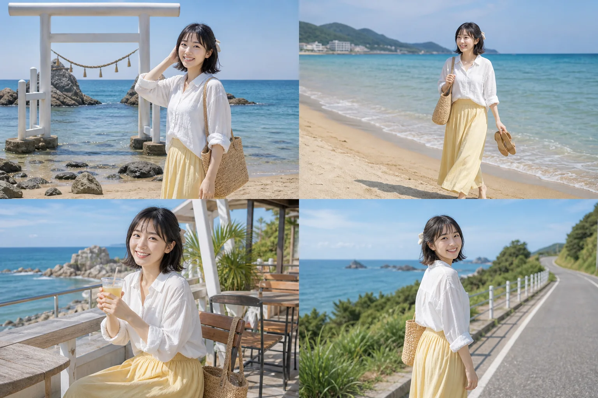
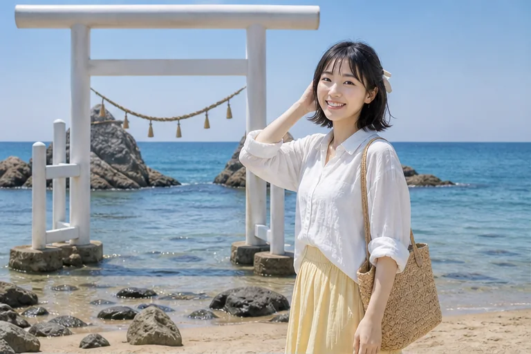
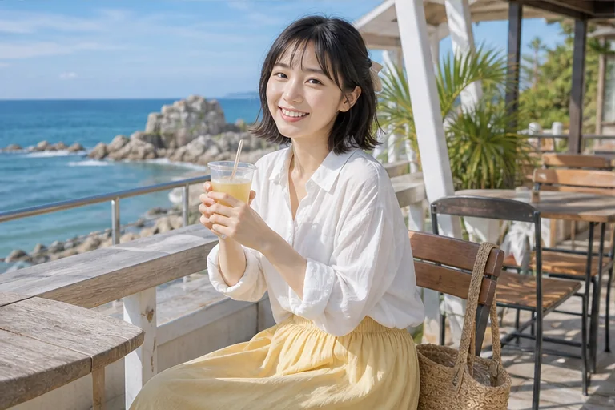
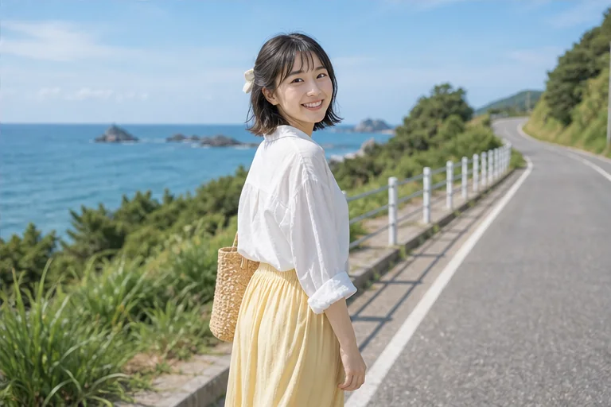

糸島很像福岡旁邊偷偷藏起來的小假期。白色鳥居站在海邊，後面是亮亮的海，整個畫面乾淨到像被陽光洗過。
今天穿了很輕的白色襯衫和黃色長裙，想讓自己看起來也像夏天的一部分。沿著海岸線走的時候，浪聲一直在旁邊，腳步會自然變慢。後來坐在海邊咖啡廳喝飲料，看著窗外的藍色，心情真的被放得很鬆。
如果你來福岡想安排一個比較輕鬆的海邊行程，糸島很適合。它沒有大城市那麼滿，卻有很舒服的風、很好拍的海景，還有一種今天不用太努力也沒關係的自由感。
Fukuoka / 糸島 / 櫻井二見浦
糸島很像福岡旁邊偷偷藏起來的小假期。白色鳥居站在海邊，後面是亮亮的海，整個畫面乾淨到像被陽光洗過。 今天穿了很輕的白色襯衫和黃色長裙，想讓自己看起來也像夏天...




糸島很像福岡旁邊偷偷藏起來的小假期。白色鳥居站在海邊，後面是亮亮的海，整個畫面乾淨到像被陽光洗過。
今天穿了很輕的白色襯衫和黃色長裙，想讓自己看起來也像夏天的一部分。沿著海岸線走的時候，浪聲一直在旁邊，腳步會自然變慢。後來坐在海邊咖啡廳喝飲料，看著窗外的藍色，心情真的被放得很鬆。
如果你來福岡想安排一個比較輕鬆的海邊行程，糸島很適合。它沒有大城市那麼滿，卻有很舒服的風、很好拍的海景，還有一種今天不用太努力也沒關係的自由感。